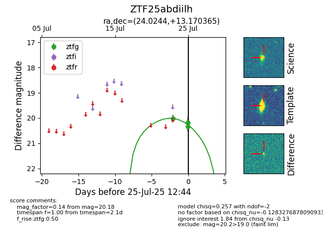

Target ZTF25abdiilh at 2025-07-25 12:44, see:
FINK: fink-portal.org/ZTF25abdiilh
Lasair: lasair-ztf.lsst.ac.uk/objects/ZTF25abdiilh
ALeRCE: alerce.online/object/ZTF25abdiilh
alt names
ZTF25abdiilh (ztf,fink)
coordinates:
equatorial (ra, dec) = (24.0244,+13.17037)
galactic (l, b) = (139.3864,-48.26940)
photometry
last ztfg=20.18
3 ztfg detections
